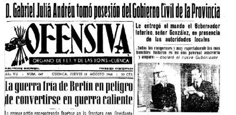
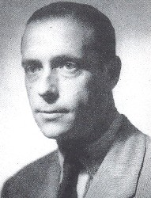
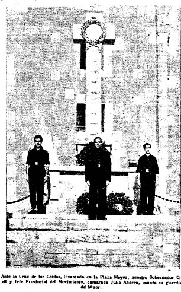

Conferencia en Cuenca el 19 de febrero, 2013, Real Academia Conquense por Salvador F. Cava.
Dedicado a Vitejo y a su abuelo Jiménez Aguilar, y recordando a Florencio Martínez Ruiz
Antes que nada, unas palabras de presentación sobre el tema del que voy a hablarles. 

Cuando el 10 de agosto de 1948 Gabriel Juliá Andreu llegó a Cuenca como nuevo Gobernador Civil y Jefe Provincial del Movimiento, ya había finalizado la IIª Guerra Mundial. Sobre el papel, por entonces, fluye la preocupación del aislamiento de España, los juicios de Nuremberg, la guerra de Corea y el frente político del telón de acero. Es claro, por ende, que era conocedor de la estrategia de acción exterior del gobierno franquista. Cuenca, entonces, era una provincia bajo mínimos. Con una población cercana a los 23.000 habitantes que aumentaría un poco al tiempo que en el cómputo provincial desde los 344.033 se iniciaría un considerable proceso de despoblación (314.634 en el año 1961). Por estas fechas dos o tres polos de significación podían señalarse. En primer lugar la dirección bicéfala o hasta tricéfala en el poder provincial. Falange y Gobierno Civil, poder religioso, y el económico en manos de la antigua derecha local heredera de fanjulismo y asentada en la propiedad de tierras, en la industria de la madera, en los servicios administrativos (abogacías, farmacias, transporte, hoteles, restaurantes, producción, eléctrica), y ubicados sus descendientes en el entorno del poder municipal o en la Diputación como espacio de reconocimiento. Con el tiempo, toda esta estructura de poder se rearmonizará para una más homogénea gestión, no tanto por la labor de Juliá, que también la tuvo, sino por decisiones centrales de disposición de organismos, delegaciones o unificación y renovación de cargos en todo un engranaje de la administración pública que rediseñó los espacios urbanos.
Pero ésta no pretende esta ser una charla ni sobre el franquismo ni sobre Falange. Para los más jóvenes hay bastante bibliografía que les puede servir de apoyo y acercamiento a los tiempos pasados de la dictadura. Para los mayores hay también demasiada biografía para que no recuerden con bastante exactitud aquellas décadas desde la memoria singular. Para mí existe tanto lo uno, bibliografía, como lo otro, biografía.
Esta charla quiere ocuparse de tres cosas: de una persona, de un tiempo y de un espacio: del gobernador Gabriel Juliá Andreu, de los años en los que ejerció el cargo (1948 a 1956), y de la provincia de Cuenca. Ese es el marco. ¿Y por qué elijo este tema? Aquí podría extenderme. Pero me obstino en ser breve y concreto, no teorizando más allá de lo imprescindible.
En el año 2001 José Luis Muñoz, a quien siempre estaré agradecido, tuvo a bien incluir en una de las colecciones del ayuntamiento de Cuenca por él dirigida la edición de las memorias de un maqui todavía vivo de nuestras sierras. Yo estuve a cargo de sus referencias críticas. Eran los recuerdos de Emencio Alcalá, de San Martín de Boniches. Desde dos años antes venía trabajando sobre este tema histórico. Por aquellas fechas redacté dos artículos más en la revista Olcades, a los que posteriormente siguieron otros varios que fructificaron en dos gruesos volúmenes editados por mi amigo Ramón Herraiz, en el 2006, y que dan una visión amplia y de conjunto de la historia de la Agrupación Guerrillera de Levante y Aragón, donde tanto protagonismo tuvieron un montón de conquenses, tanto en el monte como contra el monte, para ser cabal hoy en día.
Desde aquellas fechas he seguido profundizando en el tema, pero ahora ya reorientando mis investigaciones hacia episodios, lugares o personas precisas. Dejé de publicar libros y los cuatro largos artículos redactados últimamente pueden leerse en Internet, en una revista digital llamada Entremontes que, desde La Pesquera, se ocupa otro buen amigo, Óscar Serrano.
Este era el destino, y en buena parte sigue siéndolo, de algunas de las palabras que hoy les dirijo. La continuación de la serie allí publicada pensé hacerla trazando una sencilla biografía del gobernador civil de Cuenca que en buena medida, no en toda, consiguió que durante su mandato desapareciesen los bandoleros, los maquis o los guerrilleros de los montes de Cuenca, que de las tres formas fueron denominados, dependiendo de la posición política o social de sus interlocutores.
En el proceso de investigación de dicha biografía, que no pensaba que me ocupase más de quince o veinte páginas y algunas fotos, y a la que ya le he dedicado más de año y medio intenso y exclusivo trabajo, la figura del gobernador Juliá se fue sobredimensionando. Encontré testimonios y datos no para 15 páginas sino para más de cien. Con recuerdos de gente cercana que lo conoció y trató. Y quiero aquí agradecer la gratísima atención prestada por Luis Roibal, Luis Cañas, Felicidad, empleada de hogar de la familia, la hija de Jesús Moya, y lamentar la nula colaboración de las hijas del propio gobernador, que desde su catalanidad enmascarada entiendo. Con todo, la mayor parte informativa, y esto he de recalcarlo pues es indicativo de lo bien que se pueden hacer las cosas, camino por el que deberíamos seguir una vez salgamos de esta inmerecida crisis, digo que la mayor parte informativa está recogida en el diario Ofensiva, digitalizado por el Centro de Estudios de Castilla La Mancha.
En ese proceso de recogida de datos vi que las referencias biográficas semejaban tan sólo un complemento a su propio e intenso recorrido vital. Por lo que nos atañe, durante los siete años de mando en Cuenca, y además del asunto del maquis, Juliá también dedicó un esfuerzo considerable tanto a revitalizar la estructura provincial de Falange como a visualizar los aspectos culturales y turísticos de la provincia. Contando obviamente para tal fin con los mimbres adecuados desde su singular promontorio y exclusivo trato. Me refiero básicamente a Jesús Moya desde la delegación provincial del Movimiento, y a la figura de César González Ruano una vez confirme su presencia en Cuenca en los primeros años de la década de los cincuenta.
Con ese corpus informativo, pues, surgió, gracias de nuevo a José Luis Muñoz, cuya larga, prolífica e impagable labor en pro de la memoria cultural desde el buen sentido y los valores cívicos modernos, no tengo ninguna duda que tanto ahora como en todos nuestros futuros le será reconocida, de dar esta charla y de editar un libro en su nueva colección planeada con sumo gusto. Y en eso estamos.
Me gustaría comentar en estas previas de mi charla que los malos historiadores ponen muchos nombres en sus libros, pero también los buenos, lo he podido comprobar últimamente en algún ensayo, por ejemplo, de Preston. La verdad es que la historia la hacen las personas y los pueblos. Por ello, tanto gentes como acontecimientos conforman su carácter. Resulta inútil quererlo silenciar. Totalmente inútil, aunque se argumente con valores de consenso. Se podría cuestionar el oportunismo y sus posibles enfoques. Pero nunca su existencia. Sin memoria, sin recuerdos propios, no hay persona. Tan sólo esa enfermedad degenerativa que conlleva una total dependencia. Y es que además, los ciclos de recuperación de la historia, como conocimiento y análisis, son perentorios.
Pero yo aquí no vengo a cuestionar nada en esta hora de charla. Por el contrario, quiero resaltar lo positivo de un tiempo difícil, en lo económico y en lo social. La historia de Cuenca en la posguerra no es una maravilla, ni tampoco es singular ni única, pero es su historia, con sus protagonistas. Es cierto que la exclusión como norma, y la inclusión como principio insoslayable supuso revanchas, tal vez comprensibles, pero también dolor por dolor, represión y miseria, moral y económica, y además programada y ejecutada desde el poder y con todo un ejercito confesional de apoyo. Pero básicamente esta es la etapa inicial tras la guerra civil de la que espero reflexionar en un próximo trabajo.
Como anticipo de conclusiones, creo que la estancia del gobernador Gabriel Juliá Andreu supuso un apreciable intento de diferenciar Falange, JONS y Movimiento. La puesta de largo del proyecto falangista con piezas bien labradas de naturaleza local. El honroso, aunque no menos hipócrita, esfuerzo por recuperar, desde el punto de vista de la cultura y el turismo los caminos trazados en los años de la República, y la adecuación pausada de infraestructuras locales y provinciales acordes con el desarrollo administrativo, económico o educativo de la renqueante, por desnutrida, población. En esta etapa, los maquis son un ejemplo de rebeldía, Falange un mundo de ideales que organizan la sociedad, y la cultura un manto inverosímil de miradas y convivencias inter disciplinares. Todo aspira a ser discurso en busca de ventura y aventura, o fe. Pero desprecia el diálogo. Mis palabras simplemente pretenden, sin ánimo de incriminación, otear una mera descripción y caracterización desde los valores públicos, que son constantes como el respeto, justicia, igualdades, libertades, solidaridad, etc. Pero estas son mis ideas, aunque si a alguno no le agradan, como diría el cómico, que no se preocupe, tengo otras.
El abogado catalán Gabriel Juliá Andreu tomó posesión del cargo de gobernador civil de Cuenca y jefe provincial del Movimiento el 10 de agosto de 1948. En un caso ante el secretario de gobierno civil Aniano González, por ausencia, quiero creer que no intencionada, del antecesor Del Valle, y en otro ante José Hermosilla. En ambas tomas de posesión están presentes todas las autoridades provinciales excepto el obispo que delega en el vicario Trifón Beltrán, natural de Sotos. Y esta ausencia tampoco es azarosa.
Los méritos con los que arropa su llegada tienen que ver con su militancia falangista, en la vieja Guardia de Barcelona. Había nacido en 1909. De familia trabajadora, su padre era viajante de comercio, con otro hermano de nombre Ramón, licenciado en Derecho con notas destacadas, se afilia a Falange en 1935 tras la conferencia de José Antonio el 3 de mayo en la sede de la calle Rosich. Bajo el aval y la amistad de Luis de Santamarina, uno de los fundadores de la Falange catalana, sobrelleva la guerra pasándose al bando nacional y estando adscrito al cuerpo jurídico. Terminada la contienda regresa a Barcelona. Allí retomaría su filiación falangista al tiempo que monta su bufete de abogado. Dentro de Falange oficia como jefe provincial del Sindicato de la Piel. Asimismo es elegido vocal en el Colegio de Abogados (en junio de 1939). Colabora también ahora en revistas literarias y profesionales. Dirige la Revista Jurídica Catalana, incluso desde Cuenca, y la colección de la editorial Miracle de Clásicos Políticos Españoles, donde prepara las ediciones del Marco Bruto (de Quevedo, uno de los libros del gusto de José Antonio) y de Gracián Los tratados políticos. Se casaría con Angelines Campabadal Martí, de cuyo matrimonio nacerían dos hijas, Angelina y Mª Teresa. Su cuñado fue Ramón Campabadal Martí, quien durante un tiempo perteneció a la primera plantilla del Barcelona con la que ganó la primera liga española en 1929.
Algunas notas recogidas en la prensa de Barcelona, lo cual resulta indicativo de su destacada importancia y compromiso en la posguerra desde su doble labor como político de Falange y como abogado nos lo sitúan el 29 de enero de 1941 dando una conferencia en el salón de actos de la Jefatura Provincial de Movimiento, con asistencia del gobernador Correa Véglisson bajo el tema: “Historia y evolución de la doctrina falangista”. El 7 de julio de 1942 en Sabadell disertando sobre Quevedo y Marco Bruto y la Política de Dios, con concurrencia general de las autoridades del momento. Destacado asimismo será el hecho del homenaje que sus compañeros Viajantes de Comercio le tributan al padre de Juliá el 23 de junio de 1946 al tiempo de su jubilación tras 38 años en activo. Mateo Juliá Vilardell era el secretario de la entidad. Y una última nota nos lo sitúa el 4 de julio de 1947, antevíspera del referéndum del Fuero de los españoles, presidiendo la mesa electoral del distrito 7 de Barcelona.
Tras su nombramiento (por el ministro de la Gobernación, Blas Pérez González (el mismo que firmaría siete años y medio después su cese, y antiguo decano de la Facultad de Derecho de Barcelona) y llegada a Cuenca en 1948 Juliá traería consigo a su familia, su esposa y sus dos hijas (a mediados de octubre). Había sido por la intercesión de Santa Marina, Consejero Nacional del Movimiento por Barcelona, y que viajaría en diversas ocasiones a Cuenca invitado por Juliá, como éste conseguiría el cargo de Gobernador.
El apoyo inicial en el día a día, dentro de la delegación de Gobierno Civil quien organiza todo es el secretario general Aniano González. De quien me recrean su imagen como persona mayor de mal genio. Parece que con el tiempo hubo que amputarle una pierna, posiblemente a finales de 1951 cuando según se precisa hubo de superar una seria operación realizada en Madrid. Momento este que coincidió con la recuperación de un ilustre visitante de esos años en Cuenca, el periodista César González Ruano. La tragedia aún sería mayor pues “una hija suya se puso de novia con un sargento que le sacaba el dinero, y cuando ya no pudo más la mató”. A Aniano González se le otorgó la medalla del Mérito Civil el de 26 enero de 1950. El día 10 de abril de 1956 fallecería siendo ya Perlado Cadavieco el nuevo gobernador, realizándose su entierro en su pueblo natal de Palomares del Campo. Ocupaba el cargo de secretario de Gobierno Civil desde 1942.
Una vez en Cuenca y tras la toma de posesión, su actividad fue constante. No podía ser de otro modo al ejercer el mando activo tanto en la dirección de gobierno como en la jefatura provincial de Falange o del Movimiento. Agenda de visitas y audiencias que en los primeros tiempos se ciñen mayoritariamente a organismos y espacios de la propia capital. Efectuó igualmente constantes viajes tanto a Madrid como a Barcelona. A Madrid con motivo de las preceptivas reuniones oficiales, y a Barcelona con ocasión de las etapas de vacaciones. Viajes, sobre todo a Barcelona, que aprovecharía para saludar a las autoridades provinciales, como el gobernador Acedo Colunga, y de paso mantener los hilos políticos, al tiempo que ponerse al día de las antiguas labores profesionales, ahora en pausa, relacionadas con sus derechos económicos familiares y en menor medida, por ahora, con las ínfulas literarias y artísticas. Recordemos, como lo hará González Ruano, que tenía un cuadro de Marc Chagall en su despacho, que le gustaba pintar y que era un buen conocedor de la estética figurativa y decorativa de los años veinte: Pasquín, Creixans, Mucha, Nonell, Utrillo. Tema que solía ser frecuente en sus conversaciones, aunque sin aceptar bien ni la abstracción a la que en más de una ocasión calificaría como “camelo”, ni el compromiso comunista, como bien recoge Raúl Torres en una anécdota que le relatara Antonio Pérez: “Una vez en una cena en su palacio (de César Ruano) Cerrada, C. Diamante, Pepe Esteban, A. Saura, Madelaigne, el gobernador Juliá, y yo, discutimos de política y hablamos de la ausencia de Picasso del panorama español. El único que dijo que no debía venir fue Juliá. Fue violento y abandonamos todos el caserón menos el gobernador. Al día siguiente César se presentó en casa de Antonio (Saura) y le dijo “¡pero cómo habéis hecho eso con el gobernador”! ¡Yo estoy con vosotros! ¡Pero yo me quedo aquí y vosotros os vais a París!”. Por lo demás, las repetidas visitas a Colunga en Barcelona nos llevan a pensar, y tras verificar el componente biográfico de las personas que le apoyan, que Juliá se relaciona con lo más nuclear y menos aperturista del entramado falangista: Raimundo Fernández Cuesta, Santa Marina, Arrese, Colunga, Pérez González.
En los primeros años de Julia en el cargo lo que verdaderamente le ocupa y preocupa es la presencia del maquis en la sierra de Cuenca, y sus rescoldos en La Mancha. Una de las primeras cartas que recibirá, depositada en los buzones de correos de la propia capital será de la guerrilla. En su época ya denominados oficialmente tras la ley de abril de 1947, como bandoleros, y en la terminología actual como guerrilleros antifranquistas. Un año de actuaciones llevaba la AGL (desde mitad de 1947 a mitad de 1948) en el interior provincial, algo más esporádicamente en sus lindes. El gobernador anterior Del Valle se había visto superado. Juliá también lo estuvo durante año y medio, para al fin darse cuenta de la inoperatividad de sus decisiones y promover un cambió de estrategia que cumplió su fin. E incluso modificó su pensamiento, aunque no la memoria. Tras el maquis, los postulados sobre Cuenca de Juliá fueron distintos. En 1948, cuando como nuevo gobernador llega a Cuenca, el maquis, en un pensamiento de posibles descabellado, aún creía que podía tomar militarmente la ciudad, y de ahí los trágicos sucesos de la puerta de San Juan del día 23 de septiembre de 1949.
Desde 1945 hasta 1951 hay guerrilleros en Cuenca. Su historia la hemos trazado por activa y por pasiva en dos voluminosos tomos y en al menos tres ediciones de memorias (las de Emencio Alcalá “Germán”, Juan Hueso “Casto” y las del enlace de Fuentes, Félix Pasarón) y en más de una decena de largos y documentados artículos. No es cuestión de repetirse, pero sucintamente hasta la llegada de Juliá en agosto de 1948, asistimos a una presencia de maquis tanto en la zona de La Mancha como en la Serranía. Cuando Juliá jura el cargo, la organización manchega, que había tenido como referencia geográfica el triángulo interprovincial de Las Pedroñeras, Socuéllanos y Villarrobledo, prácticamente ha dejado de existir. No así la de la Serranía. En los primeros tiempos de su mandato dos son los grupos que seguirán activos en la provincia. Los del andaluz “Paisano” al norte y con mucho apoyo en el Campichuelo, en especial en Sotos; y al sur el de “Segundo”, de Tebar, con base en todos los pueblos del entorno de Monteagudo de las Salinas y más al este en San Martín de Boniches. En el mismo otoño de 1948 se nombrará jefe de esta zona, o sector en nomenclatura guerrillera, 5º Sector, al madrileño de Villanueva de Perales “Capitán” (Anastasio Serrano). En concreto, Juliá, sin saberlo con exactitud sus fuerzas de seguridad, en especial las de la comandancia dirigida por el manchego de Herencia, Sáez Chorot, pronto sustituido por Antonio Cejudo Belmonte, se encontrará con algo más de 30 guerrilleros en los montes de Cuenca. Número que aumentará hasta cerca de 50 a lo largo de 1949 por una gestión inicialmente equivocada, a imagen y semejanza que la que había practicado Del Valle, puramente militar. Los sucesos finales de 1949, hicieron que se cambiase de mandos y de forma de lucha, al menos de cara a las familias con parientes en el monte. Los años 1950 y 1951, desde el punto de vista de la acción gubernativa, donde Juliá se mostró al tiempo que expeditivo también teatralmente comprensivo, dieron sus frutos y hacia mitad de este año el tema guerrillero había dejado de existir en la Sierra de Cuenca, pero no exactamente por la acción represiva, aunque en gran parte así lo fuese, sino también por las propias órdenes internas del monte. Juliá acabó con los guerrilleros en Cuenca, pero sin obviar que ellos se trasladaron de provincia en 1951, replegándose al entorno de Calles y Cofrentes, y en 1952 retirándose hacia Francia a donde se exiliaron un buen puñado de conquenses. El 27 de abril de 1952 sería detenido el mítico “Manco de La Pesquera” cerca de Venta Gaeta (Valencia), y unos años más tarde fusilado en Paterna (10 diciembre 1955). En el intermedio, custodiado por la guardia civil, estará durante una temporada en la antigua comandancia, sita en la calle Colón, y hasta se reunirá en al menos una ocasión con Juliá y otros cargos de su plana de orden público y tomará café en su propio despacho.
En 1949, asimismo, Juliá hubo de lidiar con una de las peores catástrofes, si no la mayor de las acaecidas en la provincia como fue la explosión del polvorín de Tarancón. El 26 julio 1949, estallaría el depósito causando enormes destrozos en todo el pueblo, y especialmente en las casas colindantes de las que 240 viviendas resultaron totalmente destruidas. Pero las consecuencias peores recaerían sobre la población con 26 personas muertas, otras 35 heridas de gravedad y 125 de menor consideración. Si no de forma oficial, sí de manera oral, se creó el sonsonete de que tal vez fuese obra de la guerrilla. Más tarde, a final de año, sí que surgirá una burda maniobra de la guardia civil y de la policía madrileña de la DGS para hacer pasar por guerrilleros a simples sindicalistas del gremio del taxi a quienes literalmente se les asesinó y se les enterró en Barchín del Hoyo. Días antes, el 23 diciembre, Juliá rendía visita al Caudillo acompañando al pleno del ayuntamiento de Tarancón que presidía Inocente Ballesteros de la Osa. Y un mes antes se había visto en la necesidad de adentrarse en zona guerrillera, “en el tiempo del peligro” como recordará en alguno de sus discursos, acudiendo a San Martín de Boniches desde donde en el mes de octubre 14 jóvenes se habían echado al monte y otros 8 desde el entorno de Mohorte, entre ellos 4 mujeres. Viajes estos de Juliá, como otros muchos que en épocas posteriores realizase, siempre en caravana de autoridades, custodiado por la guardia civil, en trayectos silenciados y con metralleta y bombas a mano. Y no sin antes, y en múltiples ocasiones, obligando a los alcaldes a trasladarse a Cuenca para darle el parte, quincenal o mensual.
Con Cejudo Belmonte (nacido en Albacete en 1898) Juliá cambió la estrategia de lucha contra el maquis. El primero de ellos lo dejaría escrito en uno de sus informes finales: “Presentado que fue el primer bandolero, y a la vista de las manifestaciones hechas por el mismo, se apreció la necesidad y extraordinaria conveniencia de que este elemento permaneciera en esta Comandancia para trabajar con la fuerza, y por el momento no ponerlo a disposición de las autoridades militares, con objeto de hacer ver a los demás que se hallaban en las partidas que no se aplicaba a los presentados la Ley contra el Bandidaje y Terrorismo, y de esta forma conseguir más deserciones de bandoleros. Estos proyectos fueron elevados a consulta de los mandos superiores de esta Comandancia, y previa la aprobación de los mismos, fueron puestos en práctica, dando por resultado la presentación de otros ocho bandoleros, que han estado en constante colaboración de la fuerza, llegando a feliz término el fin propuesto ya que de treinta y un bandoleros de que se componían las partidas de esta provincia, han quedado reducidos a cuatro. Obtenido el resultado apetecido, y considerando que estos bandoleros presentados han prestado ya cuanta ayuda podían, se cree llegado el momento de entregarlos a las autoridades correspondientes”. No se refería a todos los que se fueron presentando a las autoridades y sí, más bien, a los que lo hicieron a partir de 1950. En total 14, de los que dos serían condenados a muerte y fusilados en Ocaña. Elías (de La Ventosa, con domicilio en Chillarón) y El Abuelo de Valdemoro (con residencia en Castielfabid).
No entregar a la justicia militar a los presentados, ni tampoco a los detenidos, a los que se les siguió aplicando la ley de fugas, fue uno de los cambios de estrategia incorporado a partir de 1950 por Juliá. No por ello se dejó de utilizarlos en los primeros momentos para acciones de ayuda a la Comandancia, a la contrapartida del brigada Arenas. Pero acto seguido, hasta la verificación de la ausencia de acción guerrillera en la provincia, se les permitió la libertad vigilada, y hasta a alguno de ellos se le buscó trabajo como fórmula complementaria de la presión suave que sobre esas fechas se realiza en los entornos familiares. Precisamente este entorno doméstico fue visitado en alguna ocasión tanto por el propio gobernador, que también recibió en su despacho a familiares, como por otras personas del ámbito social con cierto predicamento en las respectivas zonas. Un tercer brazo de esta nueva manera de hacer, y por ende la única que daría un notable éxito, fue la de dejar de maltratar a los detenidos para evitar lo que venía siendo habitual, que la gente se refugiase en el monte, tal como sucedió a finales de 1949 tanto en San Martín de Boniches, Las Zomas, Atalaya o Mohorte. Así nos lo recordaría Emencio Alcalá “Germán”. A Cejudo Belmonte le condecoraría Juliá, como también hará con la plana de la contrapartida.
Es lógico de entender que en el tiempo que nos ocupa la prensa local apenas si aporta datos relativos a los hechos guerrilleros. No obstante, cualquiera que en dependencias oficiales leyese el boletín provincial vería las asiduas requisitorias del tribunal militar nº 2 de Valencia, en las que el juez instructor Broco daba datos y señales reiterados de muchos de los maquis que actuaban tanto en Valencia como en Cuenca. En Ofensiva, mientras tanto, sí que hallamos, aunque sin relacionarlo muy especialmente con el clima de lucha armada, noticias referidas a las esquelas de funcionarios, alcaldes o guardias muertos en acciones de la guerrilla o próximas a ella, así como su correspondiente sepelio con misa incluida en la propia catedral. Por ejemplo, la inclusión (25 de junio, 1948) de un listado numérico de billetes entregado a la gente del monte tras un secuestro en el entorno de Cofrentes. Asimismo, desde la importante acción de Cerro Moreno (7/11/49) hasta otras más tardías vemos cómo se recoge la entrega de medallas y condecoraciones a mandos y tropa de la guardia civil, siendo indicativa la del 27 de junio de 1951, con foto incluida, donde se oficia lo que podríamos llamar el fin del dispositivo de lucha gubernamental en la provincia de Cuenca. Antes habían sido galardonados entre otros, y sólo haciéndonos eco aquí de los que hemos visto reflejados en la prensa, el comandante de Landete Ramón Jiménez Martínez, el 8 de diciembre de 1949, y más tarde también junto con el cabo Siro Casteblanque, el 19 de marzo de 1950. Precisamente a Landete acudirá Juliá en varias ocasiones visitando igualmente todo el contorno, en especial Santa Cruz de Moya donde se personará hasta en tres ocasiones: la primera tras los acontecimientos de noviembre en 1949, la segunda llevando el subsidio, y la tercera en noviembre de 1952, en un acto de afirmación Falangista y al tiempo de la inauguración del transformador de la luz.
Uno de los más significativos sepelios de las personas muertas fue el del guardia civil Latino Ramos Montero, 8 de marzo de 1949. Al acaecer en el barrio de San Antón, y no por culpa de la guerrilla, se le dio tratamiento de héroe, casi el último héroe de Cuenca. Con funerales de máximo calado oficial, con todas las autoridades tras el féretro, Carreterías llena de gente, comercios cerrados. El ayuntamiento presidido por Merchante había publicado un anuncio en Ofensiva invitando a todo el vecindario a los funerales celebrados el día 14 a las once horas en la mismísima catedral. También se ofició misa en San Esteban el día del entierro. Hasta el puente de la Trinidad llegó el séquito. El obispo rezaría la oración final y Juliá pronunció las palabras del ritual falangista: “¡Camarada Latino, presente!”, seguido del Cara al sol y los vítores últimos. Un hermano suyo, religioso en un convento de Palencia, llegó a rendirle duelo póstumo. También aquí, como en otras ocasiones, se le echa la culpa al “marxismo criminal”, al comunismo, cuando todo había sido un simple exceso de celo en el servicio, pero el enemigo siempre es el enemigo y la dialéctica es histórica e historia, o no lo es.
En no menor medida también quiero poner de relieve el hacer cultural de Juliá Andreu durante su estancia en Cuenca. Presente ya al poco de su llegada y visualizado durante este periodo a través de las páginas de Ofensiva, de Luján y de Miguel de la Hoz. Así, si la presencia destacada de César González Ruano es un hito por lo que comporta y por la amistad y cobertura que se profesaron, no lo son menos sus intentos de “crear” el Centro de Estudios Conquenses, el ánimo de dinamizar con los Seminarios falangistas el poso intelectual de la provincia, el decidido apoyo a las revistas y periódicos de Falange, su propia contribución con algunos artículos sobre política mayormente (recogidos en su libro Clásicos Políticos Españoles), así como la asistencia a diversos actos de calado cultural, tal exposiciones, conferencias, conciertos, y hasta su vocación de redimensionar turísticamente la provincia, con más cordura que la de Perlado, su sucesor. Queda deliberadamente como no incluido en el tiempo de esta exposición la religión y su pregón de Semana Santa de 1955, como tampoco su intento de proyección literaria en los años sesenta, de retorno ya a Barcelona, donde publicaría dos novelas y sería finalista del premio Nadal en 1966.
En febrero de 1949, a través de Ofensiva, al tiempo que se publica su artículo sobre Juan de Mariana, se lanza la propuesta a modo de llamamiento con firma del propio Juliá: “El Gobernador Civil patrocina la inmediata creación de un Centro de Estudios Conquenses. Invita expresamente a colaborar en este empeño al Subsecretario de Educación Nacional, y a González Palencia, Martínez Kléiser, Astrana Marín, Cirac Estopañán, Muelas, Martínez Vázquez y Marco Pérez”. Delega en la dirección de Ofensiva los primeros trabajos preparatorios. La idea, no podía ser menos, enseguida congrega muchos apoyos, siendo el más entusiasta el de Federico Muelas. “Desde mi almena” dedica a Juliá y a su propuesta actualizada tras que José Lázaro del Corral le reproche que fue Ángel Sánchez Vera el primero que lo propuso y contribuyó con su fondo y patrimonio a la misma, un claro elogio, bautizando el manifiesto de Juliá como “la Carta Magna del resurgir cultural de Cuenca”. No mucho más tarde, durante la Semana Santa de este mismo 1949, Federico Muelas invitará por primera vez a Cuenca a Ruano, Cela y Aristizábal. Del mismo modo surgen otras adhesiones graduadas en el asentir según la distancia o la autoestima. Se pretende unificar en torno a esta institución todo un hacer plural de dinamismo activo: como exposiciones, música, literatura o investigación histórica. Pero tanto González Palencia, como Kléiser o Astrana Marín, las primeras espadas de la intelectualidad conquense del momento, tras la poda de la guerra civil, loan el proyecto al tiempo que en sus respuestas no dejan sutilmente de disculparse. Por el contrario, la intelectualidad y la política local lo apoyan incondicionalmente. Sin embargo, según trascurre el tiempo, dos serían los únicos avances registrados cayendo pronto en el olvido tal propuesta. Uno de ellos el conseguir que se aprobasen sus estatutos con fecha 2 de febrero de 1950. Y el segundo el de vincular su actividad al único centro de difusión didáctica del momento, desde el punto de vista civil, el instituto Alfonso VIII y su profesorado (el 23 de octubre de 1949), entre los que se recuerda a Luis Brull, Juan Morán, José Briones o Joaquín Rojas. Circunstancia esta última que no deja de ser interesante en su análisis, pero que tampoco forjaría más que un mero realce de la buena labor docente de una pléyade de temporales catedráticos durante estos años con pátina monocroma. Así, la más destacada impronta se ciñe a conferencias, lecturas poéticas y días del libro celebrados en sus aulas, pues tampoco la Biblioteca pública, dirigida por Fidel Cardete contaba con muchos medios.
Es por ello que quiero, especialmente, resaltar dos circunstancias concretas de este periodo. Una de carácter oficial y la otra de dinámica externa. Ambas contribuyeron al diseño del panorama intelectual del momento. Una de las decisiones más recordadas y de mayor calado en la rehabilitación de la zona alta, donde tanto contribuyeron Jesús Moya y Florencio Cañas, es la relativa a la compra de una casa para César Ruano. Tras la Semana Santa de 1949, y con Federico Muelas como amigo e inicial anfitrión, César y su esposa Mery van pasando frecuentes temporadas en Cuenca. Desde el primer momento surge la amistad con el gobernador, con las autoridades municipales, Merchante, Moya y Cañas, con el ambiente de tertulia del Café Colón, y con la geografía ambiental de la ciudad que fructifica en una larga serie de artículos magníficamente estudiados por Hilario Priego y José Antonio Silva. En el año 1955 Ruano adquiere la casa con el regalo del valor de la misma por parte del ayuntamiento presidido por Moya, y con el visto bueno de Juliá, así como los acuerdos municipales necesarios para su habitabilidad. En el 1965 su produce su venta a Saura. Todo esto son datos conocidos. Tal vez lo que aquí me corresponde poner de relieve es la valoración de la impronta de Ruano en la cultura provincial, si no los quince años de su “semi atemporal” estancia, sí sus primeros momentos, aquellos en los que coincide con Gabriel Juliá, de quien, familiarmente sería íntimo amigo, como bien recoge tanto en su diario como en las diversas y destacadas referencias que hace del mismo en varios de sus artículos publicados en Arriba, El Español, La Vanguardia y Ofensiva.
Lo primero que hay que decir es que a pesar de la buena disposición de Federico Muelas con respecto a la dinamización cultural de Cuenca insinuadas o alentadas por Juliá, no es precisamente en él en quien recae la fuerza de sus apoyos y hasta decisiones. A Juliá, como recién llegado de Barcelona y teniendo presente que en algún momento tendrá que regresar a la Ciudad Condal, le importa más la propaganda exterior de la provincia que la interior. Más los turistas que llegan y que posteriormente propagan los valores naturales o históricos de Cuenca que los hijos de la misma que retornan y en la prensa interna comentan el día a día. Como bien sabemos Muelas por estas fechas ha iniciado en Ofensiva sus largas series de artículos, “Mi alma en mi almena” o “Moliendo y amolando”, en los que hay un respeto absoluto a la figura de Juliá, cosa que no sucederá con otras personalidades. Y que publica casi todo lo que escribe sobre Cuenca en la prensa de Cuenca, para entre 1953 y 1957, desaparece su firma tras el enfrentamiento con el director de Ofensiva Miguel de la Hoz.
Es por tanto Ruano el referente de Juliá, cara al exterior. Y en buena medida también alza un puente con el interior cultural. Referente cultural que en bastantes momentos cumple la misma función que viene haciendo Muelas, cual es la de traer a diversas personalidades a la ciudad; y soporte este que reiteradamente se alude como mérito en otras muchas biografías y que fructificará de manera especial en el ámbito de la pintura en los años sesenta. Pero uno de los impulsos más representativos de la presencia de Ruano lo recibirá la tertulia del Café Colón. Tertulia de la que tampoco nos corresponde historiar aquí, y de la que sería bien necesario que quienes más y mejor han escrito acerca de la misma, los profesores Priego y Silva, pudieran completar un amplio estudio individualizado. A mi modo de ver, más que hablar de sus habituales, aquí debería de centrarme tan sólo en su significado. Pero no quiero dejar de recordar sus inicios con los profesores del instituto, en 1944, a las que se suman Eduardo de la Rica y Andrés Vaca, Pilar Romero y Agustín Carretero, el doctor José Cerrada, Carmen Diamante, Juan Ramón de Luz, los hermanos Zomeño, el notario Hoyos entre otros y a partir de 1951, la presencia de Ruano como algo sustancial, pues entre otras cosas es en el café de Carreterías donde hace su nido de escritura, a imagen del Gijón madrileño. Sin programa estético predeterminado, las aportaciones personales fueron su guía. Tal vez la revista El Molino de Papel, que inicia su viaje en 1955, con Eduardo de la Rica, Miguel Valdivieso, Amable Cuenca y Andrés Vaca Page, y luego con Raúl Torres, son un exponente significativo de aquel panorama, como también puede otearse tras el espíritu emprendedor de Crespo, Carriedo y Muelas en El Pájaro de Paja. Una de las aportaciones de la tertulia del Café Colón es que en ella cohabitan sentires y gustos distintos y abiertos, que confluyen y se entienden, y que por ser una pequeña provincia conviven. Estas afinidades miran hacia dentro pero del mismo modo son testigo de visiones y recuerdos exteriores, posiblemente más en lo temporal que en lo espacial: De la Rica (con padre fusilado), el médico Cerrada en la cárcel por comunista, con su mujer en sugerido pasado con la Barraca lorquiana, Valdivieso confesado guillenista por estas fechas en el exilio. Esos sentires, sin duda, implican lecturas, pensamientos, actitudes, contactos, en suma, decisiones artísticas. Si en el campo poético se hallan los modelos garcilasistas de la posguerra con temática religiosa, geográfica y humana, también se aprecian los modos aperturistas de las revistas señaladas, en consonancia con la esencia estética de los modos del 27, de la rehumanización, del latido social y hasta de la imagen surrealista. En el terreno de lo pictórico y hasta de la escultura también podrían encontrarse entre sus contertulios referencias hacia lo figurativo con Roibal, De la Vega, Goñi, Fausto, Brieva que no dejarán de estilizar su trazo impresionista o el expresionismo en colores y en tonos planos. No parece, sin embargo, que a su calor se incubase el futuro estallido pictórico, la abstracción. En sus asertos de charla y pareceres este concepto define su frontera estética, y la aceptación del mismo habría que buscarlo en otras tertulias más hogareñas de los años sesenta donde la referencia de nada menos que París está en sus itinerarios: pienso en Saura, Miralles, Torner, Pérez, Viola, o incluso en algunas de las propuestas de la editorial de El Toro de Barro. Como es bien conocido Catalá Roca realizó alguna fotografía inmortalizando dicha tertulia en los años en los que colaborase en una extraordinaria guía turística, propiciada también por Juliá y con textos de Ruano. Y al calor también de la tertulia cabría ubicar los inicios o los apoyos periodísticos que pudieron recibir los futuros empleos de un puñado de buenos escritores como Coll, Carlos de la Rica, Torres, Sotos, Del Pozo, Florencio Martínez Ruiz.
Por lo que se refiere a la dimensión oficial dentro del programa de la cultura propiciado en el tiempo de Juliá Andreu, hemos de hacer también referencia a los Seminarios de Estudios Políticos, Económicos y Sociales de Falange, creados a finales de 1948, pero que será en la década de los cincuenta cuando perfilen su dinámica. El objetivo de estas conferencias quincenales y hasta semanales era el de proporcionar una formación básica a los mandos intermedios de la Falange provincial. El curso de las mismas solía iniciarse en el mes de octubre y duraba hasta finales de mayo. La temática abordaba asuntos relacionados con lo económico, la política, lo social y lo artístico, siempre dentro de la filosofía falangista. Se cuenta con delegados de los servicios provinciales, con nombres del mundo de la cultura y hasta el propio Juliá, o Moya que participarán como ponentes asiduamente. Es posible que las conferencias no dejaran un poso más allá de lo coyuntural y lo político, pero si hurgamos un poco es posible que veamos en ellas una manera de plantear la acción cultural.
Los Seminarios nos llevan de la mano al tercer hacer relevante del mando del gobernador, el estrictamente político. Unificados los cargos de Gobernador y Jefe de Falange ya con el mando de su predecesor Del Valle, Juliá tras su llegada va colocando en la dirección de la delegación del Movimiento a las personas con las que poco a poco siente más afinidad. Y son dos o tres los puestos que directa y visiblemente reubica. Sin ignorar tampoco que en las sucesivas elecciones de los respectivos tercios para la alcaldía, o de los delegados para el Consejo Provincial del Movimiento, o para la representación nacional, daría en todas las ocasiones su visto bueno. Pero por lo que se refiere a estos tiempos la figura de Jesús Moya Gómez, es la única sustancial, sin olvidar tampoco a Ramón Serna (Frente de Juventudes) o a Sebastián Cano (en Sindicatos y la alcaldía, tras la primera moción de censura en la posguerra conquense, auspiciada por Juliá), o la de Miguel de la Hoz (desde Ofensiva), pues la de Francisco Ruiz Jarabo (en la política nocional) o la Manuel Lledó en la Diputación quedan fuera de su alcance.
Jesús Moya, en la historia de la política provincial de estos años, merece un lugar destacadísimo. Más incluso que el propio Juliá y que cualquiera de los que he nombrado. Sobre él se construye la cara humana de Falange. Por su trabajo, dotes y convicciones. Desde el plano más idealista de la teoría joseantoniana, y además basado, en algo propio aunque no exclusivo de la realidad provincial, el aval de haber estado en la División Azul. Prácticamente Jesús Moya ocupó todos los cargos posibles dentro de la estructura de Falange, con pasos previos por Acción Católica o el colegio Severo Catalina, la Balompédica Conquense, sobre todo en el tiempo de Juliá. Pero del mismo modo, una vez éste cesó en el cargo el nuevo gobernador Perlado le fue cortando los hilos de representatividad, siendo el más doloroso el de la alcaldía, hasta el punto de que Jesús Moya terminó retirándose a sus cuarteles de funcionario de la Diputación y olvidándose de cualquier nueva aventura política. Un ejemplo, equivocado o no, de principios y caballerosidad. Como saben, falleció en 1980, siendo enterrado en San Isidro, y con una sencilla lápida de recuerdo. Poco antes aún tuvo tiempo de coeditar en el único libro de la editorial El Tormo, El Fuero de Cuenca.
El periodo final de Gabriel Juliá en Cuenca, los años 52 a 56, tiene diferente calado de acción. Ya no existe la preocupación por el maquis. La estructura administrativa franquista está lo suficientemente engranada para que no sea tan imprescindible su dirección. Las diversas delegaciones tienen línea directa con Madrid. Falange empieza a visualizarse en hogares, residencias, campamentos, marchas, asambleas, celebraciones, cursillos y tradiciones de la Sección Femenina. Pero al mismo tiempo su imposición, el desajustado desarrollo económico, y la impronta crítica que la educación y la cultura conllevan, proyectadas estas tanto desde el instituto Alfonso VIII, o el Seminario, van consiguiendo que su efecto pierda fuelle. Además, no será menor la pujanza de la Iglesia que comienza a dominar el tejido de base de la población de Cuenca, una vez dejado bien claro su martirologio, recogiendo los frutos de las múltiples campañas de reevangelización, de coronaciones, de fiestas de santoral, de ceremonias compartidas y de estructura parroquial reactivada, más próxima al día a día del vecindario. Con todo se sigue y hasta se acentúa todo el protocolo de militancia y convicción falangista con el día del Estudiante Caído (9 de febrero), el día de la Victoria (1 de abril); la fiesta de la Unificación (19 de abril); san Fernando como patrono del Frente de Juventudes (el 2 de junio); el 18 de julio, el 1 de octubre como día del Caudillo; el 12 de octubre, el 29 de octubre el aniversario de la fundación de Falange; y el 20 de noviembre recordando como día del Dolor por el fusilamiento de José Antonio, sin olvidar las largas marchas o los campamentos de los Palancares o Tragacete durante este mandato. Pero lo más relevante por estas fechas serían las concentraciones y la asamblea provincial ideadas entre 1952 y 1953. El año 1953 es el elegido. Así en Belmonte 1 de marzo tiene lugar su asamblea comarcal. De paso se clausuran en su castillo los habituales cursos de Falange Nacional. En esta ocasión a Juliá le acompaña Ruano. Por cierto, en estas fechas en el pueblo cercano de Osa de la Vega se hallaba huido y con nombre falso (Antonio Pérez Sánchez) uno de los maquis de Córdoba, de los Jubiles, José Moreno Salazar, que recuperará su verdadero nombre en 1987; y el 12 de marzo San Clemente; 15 en Motilla, 19 en Cañete y el 26 en Priego, y el 29 y 30 en Cuenca coincidiendo con la Semana Santa, así hasta ocho asambleas comarcales siendo ésta la postrera. Unos cien militantes participan en las sesiones de Cuenca y su distrito. Tras la misa en san Esteban, se reúnen en el hogar de Falange donde el delegado provincial les da la bienvenida y se organizan las diversas mesas de trabajo: Jesús Moya, José Casado, Jesús Gómez, Florencio Cañas, Juan Antonio Villaescusa, José Luis Álvarez y María Moya dirigen las sesiones. Trataron estas, y también las otras siete previas, sobre la Falange como partido único, “instrumento inspirador del Estado” que preside Rafael Mombriedo; “Captación de nuevos afiliados” bajo la presidencia de Antonio Ruipérez, “economía nacional sindicalista” por José Luis Salcedo, “Administración local y provincial” por Cayo Conversa; “Frente de Juventudes” por Fernando García, “Sección Femenina” por María Moya y “Organización cultural de la provincia” por Fernando Suay. En la jornada de clausura en el salón de la Diputación, presidida por gobernador y obispo, se resaltó la reforma de los Cupos de Compensación, la movilización del Frente de Juventudes, y la actividad cultural en los pueblos para combatir el analfabetismo.
Pero el acto de cierre fue el de la celebración de la primera Asamblea Provincial de Falange en el cine España, entendiendo todas las previas comarcales como simple recorrido preparatorio. Así, el día 11 de junio ya se anunciaba en Ofensiva, señalando el día 14 como fecha de la misma, día del Sagrado Corazón. Desde luego ni qué decir tiene que los textos que podríamos considerar editoriales se llenaron de aureola publicitaria: “Convocatoria esperanzadora” y sobre todo el de “Cuenca, azul mahón”. Cerca de 600 militantes se reafirmaron en las conclusiones comarcales entresacadas de las siete mesas de debates. A las ocho de la mañana se celebra la acostumbrada misa, esta vez ante la virgen de la Luz. Juliá preside todos los actos. Trasladados después al cine España, se inicia la Asamblea. El secretario José Casado formalizaría las mesas de estudio. Jesús Moya pronuncia unas palabras donde, en uno de sus mejores discursos, destaca los valores de “humildad, disciplina y valentía”, y los de “puntualidad, fervor y voluntad de conquista”, y hasta se atreve con planteamientos como que “hemos de dar un alerta para que todos agucemos nuestros sentidos por si acaso en España se intentan montar supuestas torres para otros fines, pues no queremos otro 18 de julio, no por cobardía ni por nada que se parezca, sino porque la sangre de nuestros caídos es sangre suficiente que tiene que ser eficaz para lograr la unidad, la grandeza y la libertad de España”.
Las conclusiones girarían todas en torno a una mayor precisión y regulación en los hechos que ya se venían practicando. Sugerencias que se elevan a las autoridades centrales sin más recorrido. Como que se declare oficialmente la fiesta de san Fernando como día de la Juventud, mejor dotación para la escuela José Antonio, colegios menores en todas las provincias, más hogares para jóvenes abiertos también a la Sección Femenina, potenciar la afiliación desde el Frente de Juventudes, los impulsos a la concentración parcelaria, claridad en la esfera de actividades entre las Hermandades y los ayuntamientos, salarios, seguros sociales, viviendas. Con todo, la I Asamblea Provincial de Falange de Cuenca, más que como expresión reivindicativa por medio de sus conclusiones, fue un acto de propaganda, el más destacado de los que se produjeron en Cuenca a lo largo de estos tiempos. A través del mismo se oficializó la presencia y el recorrido de la formación con un cuadro de mandos suficientemente preparado para dirigir la provincia durante las décadas siguientes. Pero también, como panorama primero, significó otra prueba más del valor de sus primeras espadas: Juliá y Moya. De Juliá, como venimos señalando, Ruano, presente por esos días en la capital, volverá a alimentar su panegírico, esta vez desde las páginas de Pueblo, poco después repetidas en Ofensiva, y a través de sus textos del “Diario íntimo 1953”: “Como nota distintiva de la Asamblea fue la unidad, la hermandad, la unión estrecha lograda por Gabriel Juliá Andreu, que hoy puede sentir la satisfacción legítima de reunir bajo su mando paternal y riguroso a todo lo bueno de la Falange conquense”.
A Juliá, en los años finales de su mandato, le queda por recorrer algunos pueblos en pro de inauguraciones y toma de posesión de alcaldías donde sobresale su aprecio especial por las primeras autoridades de Priego (Luis Lezcano), Tragacete (Ciriaco Casillero) y el más laureado de los falangistas locales Gerardo García Carpintero (Villarejo de Fuentes). Además, la fagotización de la derecha tradicional había sido aparente. Nada le costó a esa clase administrativa, terrateniente y maderera ponerse la camisa azul y seguir en sus cargos, como podrá verse de manera clara con Cadavieco en la remodelación en junio de 1956. Uno de los últimos y más destacados actos públicos protagonizados por Juliá sería el Pregón que pronunciase en RNE de Cuenca, durante la Semana Santa de 1955, el viernes de Dolores, 1 de abril.
Tras su estancia en Cuenca, que finaliza en febrero de 1956, regresaría a Barcelona. Poco antes había fallecido su madre Raimunda Andreu en la propia ciudad, y aquí sería enterrada en un acto público de mayestático de duelo, en San Isidro, el día 27 de enero de 1958, donde todavía, a la entrada, luce una descuidada lápida. En Barcelona retomaría su labor de abogado. Lo cierto es que las corporaciones provincial y local apoyarían la concesión de la Gran Cruz del Mérito Civil el miércoles 10 junio de 1956, trasladándose el concejal Pando López a Barcelona para su entrega.
Al poco de su regreso a Barcelona, el gobernador civil Felipe Acedo, le nombra Consejero Provincial del Movimiento. Juliá se había preocupado de cultivar su amistad. Poco antes de su regreso, como si ya tuviese inmente el final de su etapa, en abril de 1955, se postula en la terna de Barcelona para designar a su representante como Consejero Nacional. Pero para entonces otra de las vacas sagradas del falangismo catalán como es Ricardo Lechuga Paños, le gana por goleada. Juliá apenas si consigue 5 votos frente a los 237 del primero. El segundo nombramiento que conseguirá será el Subjefe Provincial. En la toma de posesión del cargo (3 de marzo, 1957) le alaban como “hombre de cultura y experiencia, de los tiempos heroicos y difíciles de Falange, admirador de Gracián y de la obra política de Fernando el Católico”. Había sustituido a José Maluquer, que a su vez le reemplazará el 18 de marzo de 1958. Hecho significativo para acceder a este puesto, además de todo lo descrito, es su activa militancia en Falange también por estas fechas, como testimonia que el 20 de noviembre de 1956 pronuncie un “fogoso y con palabras llenas de emoción” discurso en la conmemoración de la muerte de José Antonio, en la propia jefatura provincial, como miembro de la vieja guardia y ya ex gobernador de Cuenca.
Un nuevo cargo, con la rúbrica del ministro de la gobernación (por estas fechas José Luis Arrese, que había estado en Cuenca de visita en alguna ocasión) fue el de Diputado Provincial el día 1 de abril de 1958. Puesto que ocuparía durante dos legislaturas, hasta 1964. A partir de esta fecha no nos constan más cometidos oficiales. Su profesión como abogado, será ya común en su hábitat de Barcelona, y que tendrá que ver básicamente con su especialización en el comercio marítimo. Así, y al tiempo que representaba a una compañía inglesa, colabora y con el tiempo preside el Comité de Derecho Marítimo, del colegio de abogados, en sintonía con la Cátedra del Consulado del Mar de la Universidad. Hacia mediados de los sesenta es cuando retoma su pasión literaria. De esos años y de los primeros setenta son sus dos novelas Pedro y Los Darsán. El 7 de enero de 1966, queda finalista del premio Nadal, con “Uno o dos sueños”, que gana “El buen salvaje” del colombiano Eduardo Caballero Calderón. Juan Ramón Masoliver (que había estado en Cuenca llevado por Ruano hizo un breve comentario de la novela de Juliá, “viejo compañero de aulas, un novelista a la inglesa. Quiero decir ese gustoso ensamblaje de lo novelesco y lo intelectual, del diálogo salpicado de humor como vehículo de raros saberes, bordeando el ensayo. A lo Huxley, para entendernos, aunque de Juliá sea una querencia de lo fantástico y nada ajena el recuerdo del más ameno Pierre Benoit”.
Unos últimos datos nos indican que una de sus hijas, por aquello del azar objetivo, Angelines se halla casada con Emilio Cuenca. Sus nietos por tanto se apellidan Cuenca Juliá. La esposa Angelines Campabadal fallecería el 12 de agosto de 1989. Su cuñado Ramón el 31 de octubre de 1993, a los 84 años. Y el propio Gabriel Juliá el 8 de enero del 2001, siendo enterrado en el cementerio de Montjuich el día 10.
Como conclusión quería finalizar diciendo varias cosas. La primera es que el tiempo de Juliá tuvo una decidida incidencia en la construcción de la posguerra en Cuenca. Toda ella, claro es, desde los parámetros de los vencedores. A él le tocó oficiar con el final militar y al tiempo con el intento de recuperar la apariencia de normalidad de la provincia. El discurso se basó en los planteamientos ideológicos donde la lectura de la historia imperial propia se alía con la doctrina triunfante tras la guerra. Con todo, al ser la segunda oleada ideológica, la primera desde el convencimiento y no tanto desde el vencimiento, pudo contar con personas mejor preparadas. Ello supuso un hilo de convivencia y consenso, y en el que a pesar de su distanciamiento de la “calle”, que diríamos hoy en día, se esforzó en sus posibles. Apenas nada más. Por tiempo o por designios o por bases arrasadas. Pero, gracias a su esfuerzo, o incluso a su pesar, y sin olvidar el febril tiempo de racionamiento suavizado o la pérdida de población, surgieron nuevas voces capacitadas para retomar los impulsos creativos y de identidad (por ahora más cercanos al paisaje y a lo turístico), hoy por todos admirados y reconocidas. Es por ello que mis palabras son un mero ejercicio de memoria, y que desde luego aspiran a transformarse en un más detallado y documentado libro, y tras ellas simplemente abrir paso al estudio sistematizado de todo este largo periodo de nuestra historia reciente. Tarea que corresponde llevar a cabo a los buenos historiadores, no a los que como yo solemos incluir muchos nombres en sus libros.